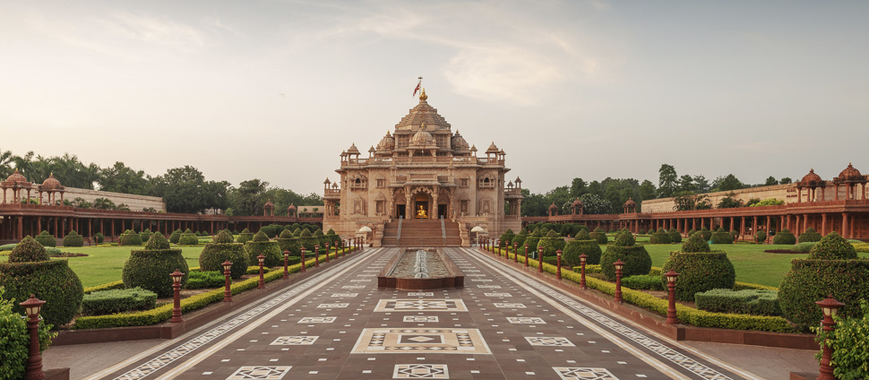
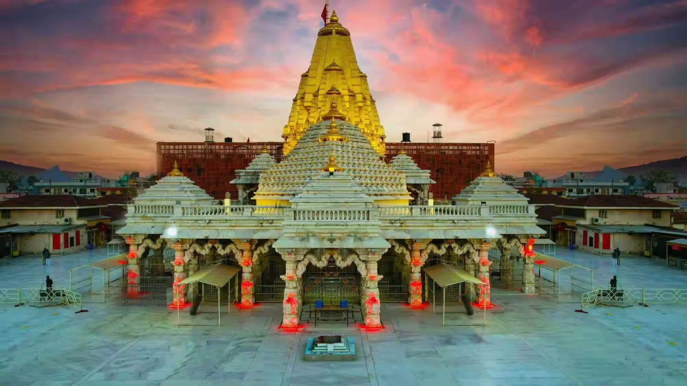
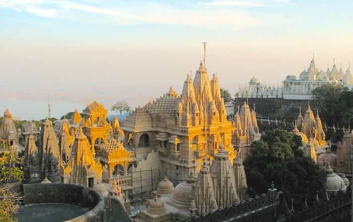

Temples and piligrimages in Gujarat
Somnath Temple
Somnath Temple, located in Gujarat, is one of the 12 Jyotirlingas of Lord Shiva and holds immense religious importance. It has been rebuilt several times throughout history and stands as a symbol of faith and resilience.
- Key Aspects of Somnath Temple:
- Religious Significance: One of the 12 Jyotirlingas.
- Historical Importance: Rebuilt multiple times after invasions.
- Location: Prabhas Patan near Veraval, Gujarat.
- Best Time to Visit: October to March.
- Click here for more information.
Dwarkadhish Temple, Dwarka
Dwarkadhish Temple is one of the Char Dham pilgrimage sites and is dedicated to Lord Krishna. Located in Dwarka, it is believed to be part of Krishna's ancient kingdom.
- Key Details:
- Religious Importance: One of the Char Dham sites.
- Deity: Lord Krishna (Dwarkadhish).
- Location: Dwarka, Gujarat.
- Best Time: October to March.
- Click here for details.
Akshardham Temple, Gandhinagar

Akshardham Temple in Gandhinagar is a magnificent temple dedicated to Lord Swaminarayan. It is known for its stunning architecture, exhibitions, and cultural displays.
- Key Information:
- Significance: Dedicated to Swaminarayan.
- Attractions: Exhibitions, gardens, light & sound show.
- Location: Gandhinagar, Gujarat.
- Best Time: November to February.
- Click here for more information.
Ambaji Temple

Ambaji Temple is one of the 51 Shakti Peethas and is dedicated to Goddess Amba. It is a major pilgrimage destination in Gujarat, especially during festivals.
- Key Aspects:
- Religious Importance: Shakti Peeth.
- Festival: Bhadrapada fair.
- Location: Banaskantha district, Gujarat.
- Best Time: September to February.
Palitana Temples, Shatrunjaya Hill

Palitana Temples are a group of over 800 Jain temples located on Shatrunjaya Hill. It is one of the most sacred pilgrimage sites for Jains.
- Key Details:
- Religious Significance: Sacred Jain pilgrimage site.
- Special Feature: Over 800 temples on a hill.
- Location: Bhavnagar district, Gujarat.
- Climb: Around 3,800 steps to reach the top.